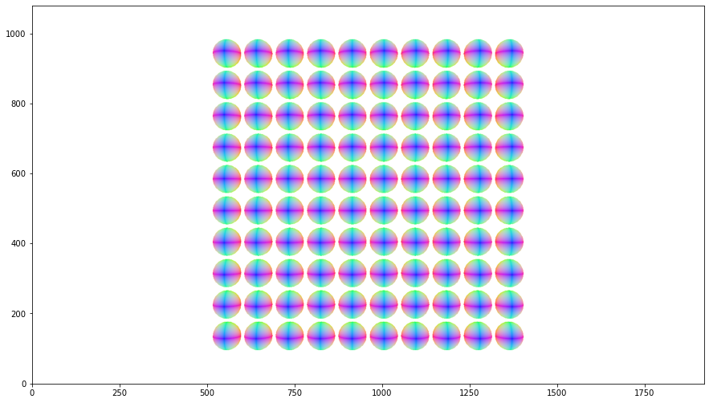

Rendering with instanced geometries
This test demonstrates rendering with multi-level instancing.
[1]:
%load_ext autoreload
%autoreload 2
[2]:
import lmenv
env = lmenv.load('.lmenv')
[3]:
# Imports
import os
import traceback
import imageio
import pandas as pd
import numpy as np
%matplotlib inline
import matplotlib.pyplot as plt
from mpl_toolkits.axes_grid1 import make_axes_locatable
import lmscene
import lightmetrica as lm
[4]:
os.getpid()
[4]:
263
[5]:
%load_ext lightmetrica_jupyter
[6]:
# Initialize Lightmetrica
lm.init()
lm.log.init('jupyter')
lm.progress.init('jupyter')
[7]:
lm.comp.load_plugin(os.path.join(env.bin_path, 'accel_embree'))
lm.comp.load_plugin(os.path.join(env.bin_path, 'accel_nanort'))
[I|0.016] Loading plugin [name='accel_embree']
[I|0.017] .. Successfully loaded [name='accel_embree']
[I|0.017] Loading plugin [name='accel_nanort']
[I|0.017] .. Successfully loaded [name='accel_nanort']
[8]:
if not lm.Release:
lm.parallel.init('openmp', num_threads=1)
lm.debug.attach_to_debugger()
[9]:
# Create a sphere geometry with triangle mesh
r = 1
numTheta = 10
numPhi = 2*numTheta
vs = np.zeros((numPhi*(numTheta+1), 3))
ns = np.zeros((numPhi*(numTheta+1), 3))
ts = np.zeros((numPhi*(numTheta+1), 2))
for i in range(numTheta+1):
for j in range(numPhi):
theta = i*np.pi/numTheta
phi = j*2*np.pi/numPhi
idx = i*numPhi+j
ns[idx,0] = np.sin(theta)*np.sin(phi)
ns[idx,1] = np.cos(theta)
ns[idx,2] = np.sin(theta)*np.cos(phi)
vs[idx,0] = r*ns[idx,0]
vs[idx,1] = r*ns[idx,1]
vs[idx,2] = r*ns[idx,2]
fs = np.zeros((2*numPhi*(numTheta-1), 3), dtype=np.int32)
idx = 0
for i in range(1,numTheta+1):
for j in range(1,numPhi+1):
p00 = (i-1)*numPhi+j-1
p01 = (i-1)*numPhi+j%numPhi
p10 = i*numPhi+j-1
p11 = i*numPhi+j%numPhi
if i > 1:
fs[idx,:] = np.array([p10,p01,p00])
idx += 1
if i < numTheta:
fs[idx,:] = np.array([p11,p01,p10])
idx += 1
[10]:
accel = lm.load_accel('accel', 'nanort')
scene = lm.load_scene('scene', 'default', accel=accel)
mesh = lm.load_mesh('mesh_sphere', 'raw',
ps=vs.flatten().tolist(),
ns=ns.flatten().tolist(),
ts=ts.flatten().tolist(),
fs={
'p': fs.flatten().tolist(),
't': fs.flatten().tolist(),
'n': fs.flatten().tolist()
})
camera = lm.load_camera('camera_main', 'pinhole',
position=[0,0,50],
center=[0,0,0],
up=[0,1,0],
vfov=30,
aspect=16/9)
material = lm.load_material('material_white', 'diffuse', Kd=[1,1,1])
film = lm.load_film('film_output', 'bitmap', w=1920, h=1080)
renderer = lm.load_renderer('renderer', 'raycast',
scene=scene,
output=film,
visualize_normal=True,
bg_color=[1,1,1])
[I|0.077] Loading asset [name='accel']
[I|0.078] Loading asset [name='scene']
[I|0.078] Loading asset [name='mesh_sphere']
[I|0.079] Loading asset [name='camera_main']
[I|0.079] Loading asset [name='material_white']
[I|0.079] Loading asset [name='film_output']
[I|0.157] Loading asset [name='renderer']
Without instancing
[11]:
scene.reset()
scene.add_primitive(camera=camera)
for y in np.linspace(-10,10,10):
for x in np.linspace(-10,10,10):
p = scene.create_primitive_node(mesh=mesh, material=material)
t = scene.create_group_node(lm.translate(np.array([x,y,0])))
scene.add_child(t, p)
scene.add_child(scene.root_node(), t)
scene.build()
renderer.render()
[I|0.178] Building acceleration structure [name='accel']
[I|0.178] .. Flattening scene
[I|0.182] .. Building
[11]:
{'elapsed': 1.157075031}
[12]:
img = np.copy(film.buffer())
f = plt.figure(figsize=(15,15))
ax = f.add_subplot(111)
ax.imshow(np.clip(np.power(img,1/2.2),0,1), origin='lower')
plt.show()

Single-level
[13]:
scene.reset()
scene.add_primitive(camera=camera)
# Instance group
g = scene.create_instance_group_node()
scene.add_child(g, scene.create_primitive_node(mesh=mesh, material=material))
# Transformed instanced group
for y in np.linspace(-10,10,10):
for x in np.linspace(-10,10,10):
t = scene.create_group_node(lm.translate(np.array([x,y,0])))
scene.add_child(t, g)
scene.add_child(scene.root_node(), t)
scene.build()
renderer.render()
[I|2.511] Building acceleration structure [name='accel']
[I|2.511] .. Flattening scene
[I|2.512] .. Building
[13]:
{'elapsed': 1.147292915}
[14]:
img = np.copy(film.buffer())
f = plt.figure(figsize=(15,15))
ax = f.add_subplot(111)
ax.imshow(np.clip(np.power(img,1/2.2),0,1), origin='lower')
plt.show()

Multi-level
[15]:
scene.reset()
scene.add_primitive(camera=camera)
# Initial group
g1 = scene.create_instance_group_node()
scene.add_child(g1, scene.create_primitive_node(mesh=mesh, material=material))
# Second group using initial group as chilren
g2 = scene.create_instance_group_node()
for y in np.linspace(-10,10,10):
t = scene.create_group_node(lm.translate(np.array([0,y,0])))
scene.add_child(t, g1)
scene.add_child(g2, t)
# Add transformed second group to the root node
for x in np.linspace(-10,10,10):
t = scene.create_group_node(lm.translate(np.array([x,0,0])))
scene.add_child(t, g2)
scene.add_child(scene.root_node(), t)
scene.build()
renderer.render()
[I|4.780] Building acceleration structure [name='accel']
[I|4.780] .. Flattening scene
[I|4.782] .. Building
[15]:
{'elapsed': 1.12509472}
[16]:
img = np.copy(film.buffer())
f = plt.figure(figsize=(15,15))
ax = f.add_subplot(111)
ax.imshow(np.clip(np.power(img,1/2.2),0,1), origin='lower')
plt.show()